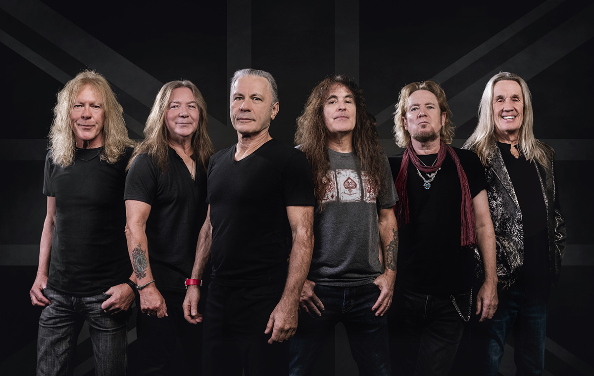

Про гурт
Iron Maiden — британський хеві-метал гурт, заснований у 1975 році в Лондоні. Вони є одними з найвпливовіших представників нової хвилі британського металу.
Їх музика відома складними гітарними партіями, швидким темпом та епічними сюжетами у піснях.
Iron Maiden були створені басистом Стівом Гаррісом у 1975 році. Гурт швидко став популярним у британській метал-сцені.
У 1980-х роках вони досягли світової слави завдяки альбомам Iron Maiden, Killers та The Number of the Beast.
Пісні гурту часто базуються на історії, міфології та літературі, що робить їх унікальними серед метал-гуртів.
Учасники гурту
- Брюс Дікінсон — вокал
- Стів Гарріс — бас-гітара
- Дейв Мюррей — гітара
- Адріан Сміт — гітара
- Яннік Герс — гітара
- Ніко МакБрейн — ударні

Найпопулярніші пісні
- The Trooper
- Fear of the Dark
- Run to the Hills
- Hallowed Be Thy Name
- Number of the Beast
- 2 Minutes to Midnight
- Wasted Years
- Phantom of the Opera
Альбоми
- Iron Maiden (1980)
- Killers (1981)
- The Number of the Beast (1982)
- Powerslave (1984)
- Somewhere in Time (1986)
- Seventh Son of a Seventh Son (1988)
- Brave New World (2000)
- Senjutsu (2021)
Концерти та вплив
Iron Maiden відомі своїми масштабними світовими турами та культовим маскотом Едді, який з’являється на кожному концерті.
Їхні живі виступи включають складні декорації, театральні елементи та потужну енергетику.
Гурт має величезний вплив на розвиток хеві-металу і залишається активним десятиліттями.